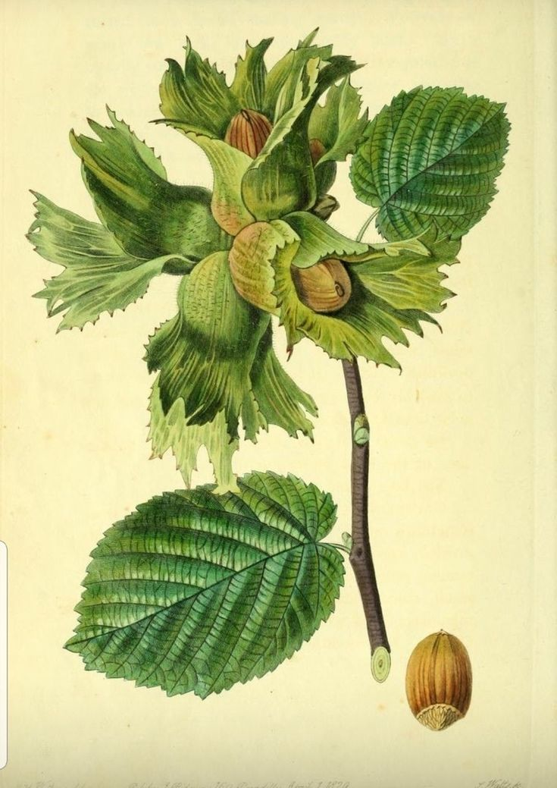

Duayeri Köyü'nden Sofranıza Doğal Kabuklu Fındık
Aracı yok, tüccar komisyonu yok! Kendi bahçemizden özenle topladığımız doğal, güneşte kurutulmuş taze mahsul fındığımızı doğrudan kapınıza gönderiyoruz.
Neden Duayeri Fındığı?
Ordu Fatsa'nın bereketli topraklarından hiçbir aracı olmadan doğrudan üretici ailesinden sofranıza.
Dalından Elle Seçilmiş
Duayeri Köyü'ndeki kendi bahçelerimizden tek tek toplanan, güneşte doğal harman kurutmasıyla kurutulan katkısız fındıklar.
Özenli & Nefes Alan Çuval
Sipariş verdiğiniz gün taze olarak çuvallanır, nem ve kırılmaya karşı korumalı ambalajla kapınıza kadar güvenle ulaşır.

Aracısız Üretici Garantisi
Toptancı veya komisyoncu farkı ödemeden, doğrudan fındığı yetiştiren aileden en taze mahsulü gerçek değerinde alırsınız.
Anlaşmalı Hızlı Kargo
Yurtiçi Kargo, Aras Kargo ve MNG Kargo entegrasyonu ile tüm Türkiye'ye hızlı gönderim; tonajlı alımlarda özel nakliye desteği.
Fındık Serüvenimiz
Duayeri Köyü'ndeki bahçemizden toplanıp harmanlanmasına, el emeğiyle seçilip sofranıza ulaşmasına kadar tüm süreci şeffaflıkla paylaşıyoruz.
Serüveni KeşfetHasat & Bahçe Fotoğrafları
Duayeri Köyü'ndeki fındık bahçemiz, harman yerimiz ve çuvallama sürecimizden gerçek kareler.
Üretim & Kırım Videoları
Fındığımızın randıman testini, kabuk kalitesini ve bahçeden toplanma anlarını videoda izleyin.
.jpeg)
.jpeg)
Doğal Kabuklu Fındık Paketlerimiz
Her paketimizde Hasat Yılı, Köy/İlçe Menşei, Randıman Oranı ve Paketleme Tarihi şeffafça yer alır.
Müşterilerimiz Ne Diyor?
Türkiye'nin dört bir yanına gönderdiğimiz Duayeri Köyü fındığı için yapılan gerçek yorumlar.
"10 KG paket aldık, kırdığımız her fındık dopdolu çıktı. Marketten aldıklarımızla kıyaslanamaz bile, gerçekten %53+ randımanlı taze köy fındığı."
"Butik pastanemiz için 250 KG tonajlı alım yaptık. Hem randımanı söylendiği gibi çok yüksek çıktı hem de çuvallama ve nakliye çok hızlıydı."
"WhatsApp'tan yazdığım anda ilgilendiler, havale sonrası aynı gün Yurtiçi Kargo'ya verildi. Kışlık 20 KG stok yaptık, kokusu ve tazeliği harika."
Sıkça Sorulan Sorular
Fındığımızın randımanı, saklama koşulları, ödeme ve kargo süreci hakkında merak edilenler.
Fındıklarınız tam olarak nerenin mahsulü ve randımanı kaçtır? ＋
Tüm fındıklarımız Ordu ili Fatsa ilçesi Duayeri Köyü'ndeki kendi aile bahçelerimizin mahsulüdür. Randıman oranımız %53 ile %55+ arasındadır; içi dolgun, çürük ve boş tanelerden arındırılmış birinci sınıf fındıktır.
Minimum kaç KG sipariş verebilirim? Tonajlı satışınız var mı? ＋
1 KG satışımız bulunmamaktadır. Perakende olarak 5 KG, 10 KG ve 20+ KG paketlerimiz mevcuttur. Toptan alıcılar için 100 KG'dan 10+ Tona kadar tonajlı çuval satışımız vardır.
Ödeme ve kargo süreci nasıl işliyor? ＋
Ödemelerinizi Havale/EFT ile güvenle yapabilirsiniz. Siparişiniz onaylandığı gün taze olarak çuvallanır ve tercihinize göre Yurtiçi Kargo, Aras Kargo veya MNG Kargo ile kargolanıp takip numarası WhatsApp'tan size iletilir.